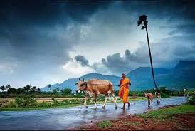
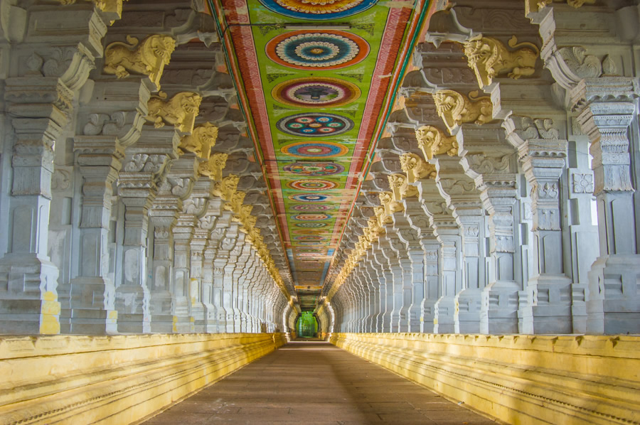

Welcome to TRAVIGO. We are going to go down the lane and take home a lot of memories. We will take you to end of Tamil Nadu and make you expreience the best days of your travel life. Tamil Nadu is very well known for its amazing sculptures and beautiful sceneries.Tamil Nadu Tourism one of the preferred hotspots for persons wanting a continuing heritage, cultural and beautiful splendour .religious experience. Tamil Nadu has breath taking hill stations and long sunshiny beaches ,provides to people who visit not only to marinate in the culture but people who want to relax and just let go for a while To experience the best of the best,click on the place where you wanna visit from the TN map.

